General Instructions
While you work through this tutorial, you will create an R Markdown (.Rmd) document. Markdown is a simple formatting syntax for authoring HTML, PDF, and Word documents that include R code and results. The document you create while doing the tutorial is just for practice - you don’t have to hand it in anywhere.
Rmd is like magic: you save all your text and R code in a simple file; when you’re ready, push a button and it’s compiled into an output document with nicely formatted text, code (optional to include, but for this class you always will), and all the figures and tables generated by your code.
Since all the data analysis and results are automatically included in the compiled output document, your work is reproducible. Reproducible means everything you did is documented, and it’s easy to re-do analysis if the data change, or if a mistake is uncovered. For more details on using R Markdown see http://rmarkdown.rstudio.com.
To create an Rmd file, you will have to work in RStudio (outside this tutorial environment). So, as you work on this tutorial, you will probably switch back and forth between the tutorial itself and a “real” RStudio session.
RStudio Tour
Logging in to RStudio
Go to http://rstudio.calvin.edu and enter your normal Calvin user name and password to log in.
Panels
When you open RStudio, you will see at least three different panels: The Console is on the left. On the upper right are Environment, History and maybe more; on the lower right are Files, Plots, and Packages. Explore a little to try to get familiar with them!
Files shows you the files saved in your personal space on the server. You can organize, upload, and delete files and folders.
Run code in R
You can do things in R by typing commands in the Console panel; however, working that way makes it hard to keep a record of your work (and hard to redo things if anything changes or if a mistake was made).
For this class, you will work in R markdown (Rmd) files, which can contain text, R code, and R output such as figures.
After you have opened a file (like an RMarkdown file) on the RStudio server, the Console panel will be on the lower left and the newly opened file will be on the top left.
R Markdown files are stand-alone!
Every R Markdown file (Rmd file) must work alone.
It doesn’t share any information with the Console or the Environment that you see in your RStudio session.
All R code that you need to do whatever you are trying to do must be included in the Rmd file itself!
For example, if you use the point-and-click user interface in the RStudio Environment tab to import a data file, that dataset will not be available for use within your Rmd file.
Similarly, if you load a package by typing
library(mosaic)or
require(mosaic)in the Console window, mosaic functions and data from the package will not be available to use within the Rmd file.
Keep your Rmd files stand-alone! (You have no choice, actually…)
Create Rmd file
In RStudio, navigate to File -> New File -> R Markdown…, or click on the white rectangle with a green + :
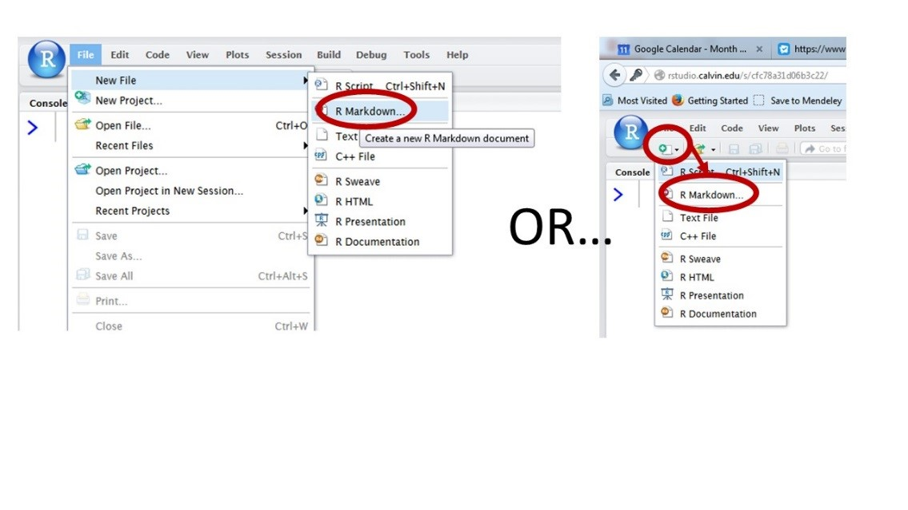
and select R Markdown from the drop-down menu.
Using Markdown Templates
- Choose “From Template”
- Select the “STAT 245 Homework” template. (This template has all the basics pre-set to make iSTAT 245 tasks easy.)
- In case you don’t see this option available, you can also select the “mosaic fancy” (which includes lots of examples to show you what Rmd can do) or “mosaic plain” (less boilerplate content) template.
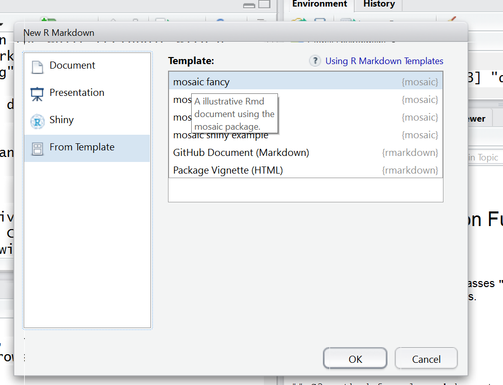
Saving Rmd files
- Save your file by clicking on the disk icon at the top of the file tab
- Use a clear file name like DeRuiterProject1.Rmd. *
- Important: Avoid spaces and special characters in your file name). If you don’t, R will change the name when you knit it, and things will get complicated fast.
- The file will be saved to the server, not to your computer.
- All your files will be accessible in the RStudio Files tab (lower right panel) whenever you log into RStudio, regardless of which computer you are using.
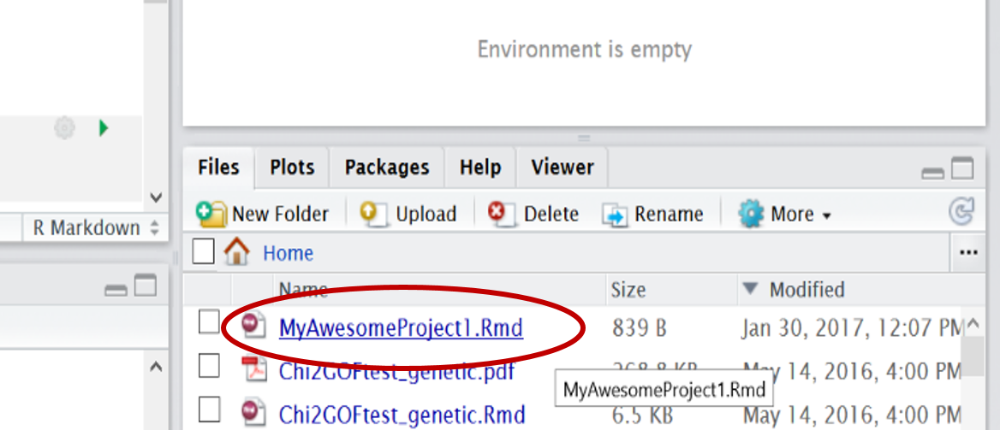
Download from RStudio
You will have to download your files if you want a copy on your own computer, or to be able to upload a copy to Moodle to turn in. To download:
- Go to the File tab
- Check the box for the file you want
- Select “More > Export”. from the menu at the top of the File tab.

Magic of Knitting
How do Rmd files actually work? What’s so cool about them?
Click on the small black arrow next to the word “Knit” (and the ball of yarn icon) at the top of the file window. Select “Knit to PDF”. Check out the compiled PDF result, and compare it to the original markdown file. Wow! (Magic, right?)
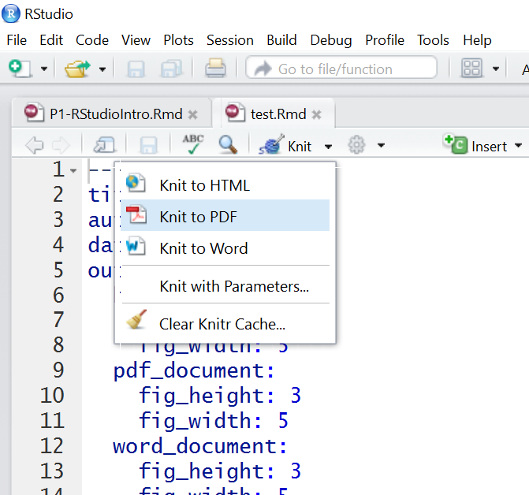
Rmd file anatomy
The “text part” of the file
The R Markdown file is a text file where you save all the R commands you want to use, plus any text commenting on the work you are doing and the results you get.
Parts of the file with a plain white background are normal text that will be typeset nicely when knitted.
You can format the text using “markdown syntax”. For example, enclosing a word in asterisks will generate italics, so *my text* in the Rmd file will become my text in the PDF. Using two asterisks instead of one will generate boldface, so **my text** becomes my text. You can also make bulleted lists, numbered lists, section headers, and more. For example,
#### This is my section header
becomes
This is my section header
(a small section header). Fewer hashtags make the text even larger, and more make it smaller.
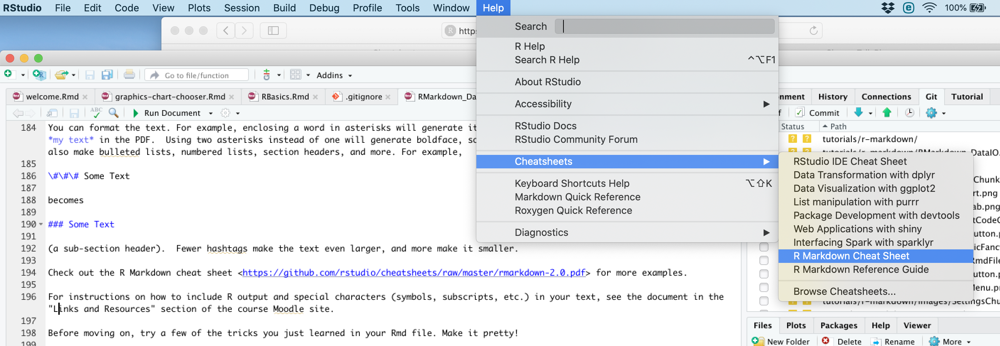
- You can get a detailed R Markdown cheat sheet within RStudio by going to Help > Cheatsheets > R Markdown Cheat Sheet (at the very top of your screen).
- For instructions on how to include R output and special characters (symbols, subscripts, etc.) in your text, there is a dedicated document in the “Resources” section of the course Moodle site. We will get to all that in more detail later on.
- Before moving on, try a few of the tricks you just learned in your Rmd file. Make it pretty!
R code chunks
An Rmd file can also contain one or more R code chunks. These sections of the file have a grey background onscreen. Each one begins with
```{r}
and ends with
```
like so:
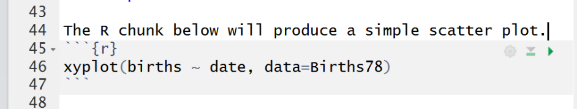
Adding a New Code Chunk
To add a code chunk to your file, you have options.
- Type in the header and footer by hand to start and end the chunk.
- Click on the green box with the C inside (at the top of the Rmd file) to insert an empty chunk.
How code chunks are treated upon Knitting
When you click the Knit button, all the code in your code chunks will be run in R. A document will be generated that includes both text content as well as the output of any embedded R code chunks within the document.
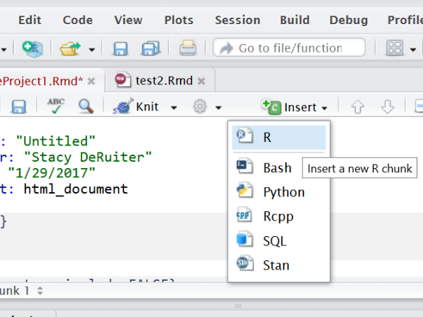
Setup Chunk and Options
The first R code chunk in a Rmd file is usually used to specify settings and is called the setup chunk.
Loading Packages
In this chunk, you can also give R permission to use certain packages (software toolkits) with
library(packagename) Alternatively,
require(packagename)does almost the same thing.
For example, we might want to use the s245 package. So, verify that the first R code chunk in your file includes the line library(s245) or require(s245) (either one works).
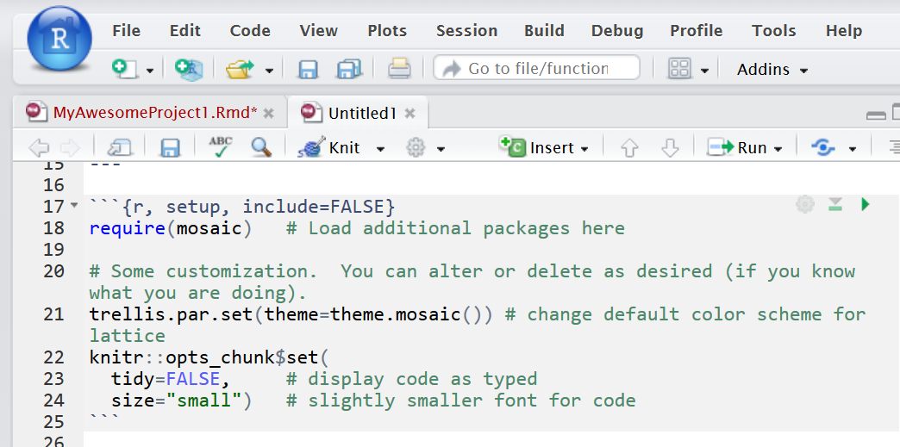
The settings chunk is invisible!
If you look carefully at the PDF output, you will see that the settings chunk does not appear there. That’s intentional - for homework, you don’t need to show me what settings you used, although I would always like the R code you use to solve problems to show up in the output PDF.
Making R code invisible in the PDF
Going back to the Rmd file, look at the header of the settings chunk – this is the part between the {curly braces}. Notice that in addition to the required “r” label, which is followed by an (optional) chunk name, the option
include=FALSE
appears, which is what makes the code from this chunk invisible in your compiled output document.
Please do not use this option for the R code you use to make calculations in your projects and homework. I want to see exactly what code you used to get your results!
Cheatsheet for more options
You can add other options for R chunks (we will learn about some more choices later) and they should all be separated by commas. You can control things like what is included in the knitted file, and how big figures are.
The Rmd cheat sheet at Help > Cheat Sheets < R Markdown cheat sheet gives more details.
Clean Up
At this point in the tutorial, you probably want to get rid of all the extra content in the template Rmd you are working with.
Delete everything in the file that comes after the settings R code chunk.
Now the clutter is gone and you have space to include your own R code and text.
Test-Run Code
Knit the file
There are multiple ways to run and test R code from a markdown file. Sometimes you want to knit the whole file and get the PDF or HTML; other times you want to run just a specific bit of code to make sure it’s working correctly.
Every time you knit the file, all R code will be run automatically.
Keyboard Shortcuts
Finally, you can use shortcuts to run specific code from your Rmd file.
- Copy the code you want to run, paste to the console window, and hit Enter.
- To run one line, place your cursor in the line you want to run and hit ctrl + enter (Windows) or command + enter (Mac).
- To run a whole chunk this way, add “Shift”: ctrl + shift + enter (Windows) or command + shift + enter (Mac).
Knit to PDF? HTML?
PDF or HTML? Which is preferable?
PDF is a good default option, since it is very portable and good for sharing and printing.
However, later in the semester we will see how to create some pretty cool interactive graphics in R, and these can only be rendered in HTML. However, HTML files cannot be shared in VoiceThread, so HTML is not ideal for homework.
Contact your prof if you need help troubleshooting knitting to PDF.
Finally: As a habit, avoid knitting to Word. Some things don’t format correctly; it also leads to a temptation to edit in Word (making things non-reproducible).
Reminder: R Markdown files stand alone
We already covered this once, but we’re covering it again because it’s one of the most common student mistakes in Rmd files!
If you run R code in the console or the RStudio GUI (for example, reading in a data set by pasting code into the console or using the Import Dataset button in the Environment tab), you won’t be able to use the results in your markdown file. Any and all commands you need, including reading in data, need to be included in the file.
The reverse is also true. If you run just one R code chunk in an Rmd file using the “run” buttons mentioned above, or by copy-pasting into the console, you are effectively running that code in the console. If R gives an error saying it cannot find a certain variable or dataset, the most likely fix is to run the preceding code chunks before the one you’re stuck on.
Read Data from URL
You can load online datafiles in .csv format into R using the function read_csv(). The input to read_csv() is the full url where the file is located online, in quotation marks. (Single or double quotes – it doesn’t matter which you choose, as they are equivalent in R.)
For example, we will consider a dataset with counts of the numbers of birds of different species seen at different locations in Hawai’i. It is stored at https://sldr.netlify.app/data/hawaii_birds.csv, and can be read into R using the command below.
hi_birds <- readr::read_csv('https://sldr.netlify.app/data/hawaii_birds.csv')When you read in data, store it to a named object
Note that we didn’t just run the read_csv() function – we assigned the results a name so that instead of printing the data table to the screen, R stores the dataset for later use.
hi_birds <- readr::read_csv('https://sldr.netlify.app/data/hawaii_birds.csv')Here, we assigned the name hi_birds to the dataset using an “assignment arrow” <- (the “arrow” points from the object toward the name).
Read Data from Google Sheets
There’s also a simple way to read in data from a Google Sheet.
First, go to the Google Sheet online to prepare it by “publishing it online”.
In the File menu, choose “Publish to the Web”:
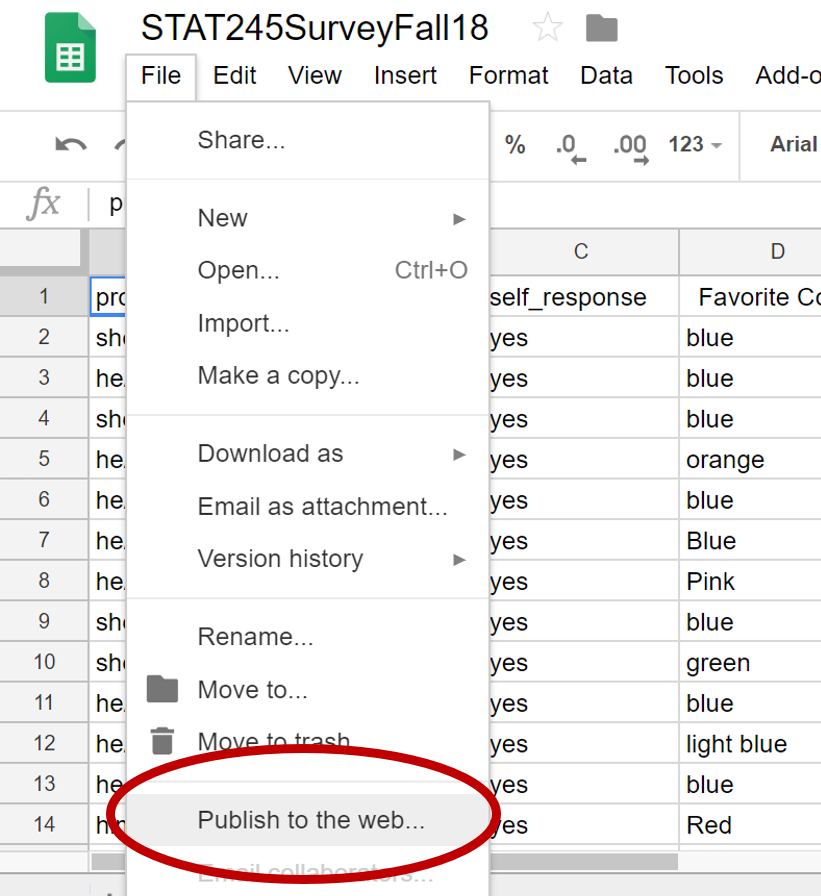
In the pop-up window, choose to publish your “Entire Document” as a .csv file:
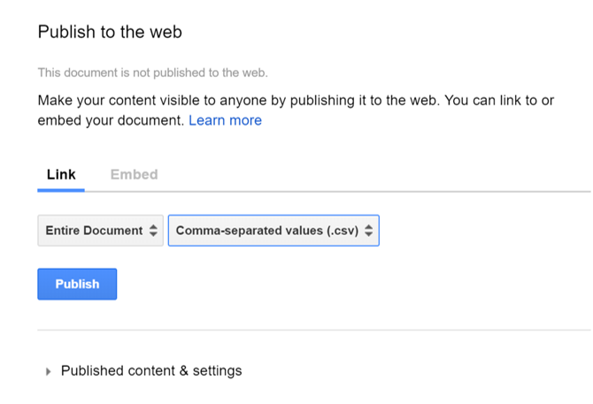
Finally, copy the resulting link.
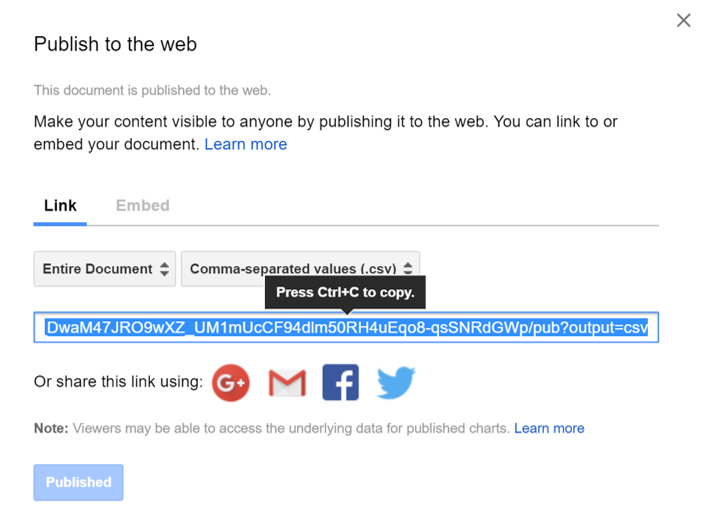
You can use read_csv() with this link as input to read your data into R.
Check: Apply a few very basic R functions
After reading the data in, you can use R functions to have a look at it, for example:
head(hi_birds)
glimpse(hi_birds)
nrow(hi_birds)Try each of the lines of code above in R. What do the functions head(), glimpse(), and nrow() do? Try to figure it out based on the output they produce.
If you get stuck, consult R’s built-in help files. Remember, you can access the help for a function by running the code ?functionName – for example, if you want help on head(), run:
?headRead Data From File
You can upload your own data file to the server, and then read it in to R using read.csv. The basic process (if you are creating the data file from scratch) is:
- Use spreadsheet software to create the data table
- Save the file as a csv file.
- Upload the csv file to the RStudio server
- Use the
read_csv()function to read the file into R
If someone has given you a file to work on, then you just do the final two steps.
Create a data file
Use any spreadsheet software (Excel, Google Sheets, etc. - your choice) to create a simple data file. For this exercise, we will use some data which represent a random sample of 25 records from the dataset HELPrct from the mosaic package; use the command
?HELPrctif you want more info on the dataset as a whole. A brief description of the subset of HELPrct data that we will use is as follows:
Researchers collected survey data from people participating in substance-abuse treatment programs. Among many other things, they recorded whether each person was homeless or housed, and also the main substance to which they were addicted (alcohol, cocaine, or heroin, in this study). Of the 25 people in our subsample, 14 were homeless, and of these 6 used alcohol, 3 cocaine, and 5 heroin. Among the 11 housed people, 1 used alcohol, 7 cocaine, and 3 heroin.
- Enter the data from the paragraph above into your spreadsheet.
- Keep these tips in mind for formatting data tables for use in R:
- Data table should have one row per observation (or “case”) – the people, animals, places, or things about which data have been collected.
- Data table should have one column for each variable observed. Choose short but informative names for your variables (and the values they can take on), and avoid using any special symbols or spaces in the names.
- When you are happy with your table, save it in CSV (comma separated values) format.
Upload and read your file
- Go to the Files tab in RStudio (lower right).
- Click Upload and browse to select the file you created.
- Then, use the
read_csv()function to read in the file. - Remember to put the file name in quotes, and
- Use <- to assign a name to the dataset!
- Note that if you made folders in your Files tab and stored the csv file inside one of them, you will have to include the relative path from your Rmd file to your data file, e.g., “myfolder/myfilename.csv”.)
Printing
It being Fall 2020, with a pandemic going on, you may not print many assignments this semester! But here’s some advice, in case you do.
When you knit a Rmd file, it will probably automatically open in RStudio’s built-in PDF pre-viewer. If you print from there, it will look awful (blurry). But when you knit, a PDF of the output is also saved in your Files tab. If you go to the Files tab and double click the PDF, it should open in your computer’s normal PDF viewer and you can print it from there…and it will look good.